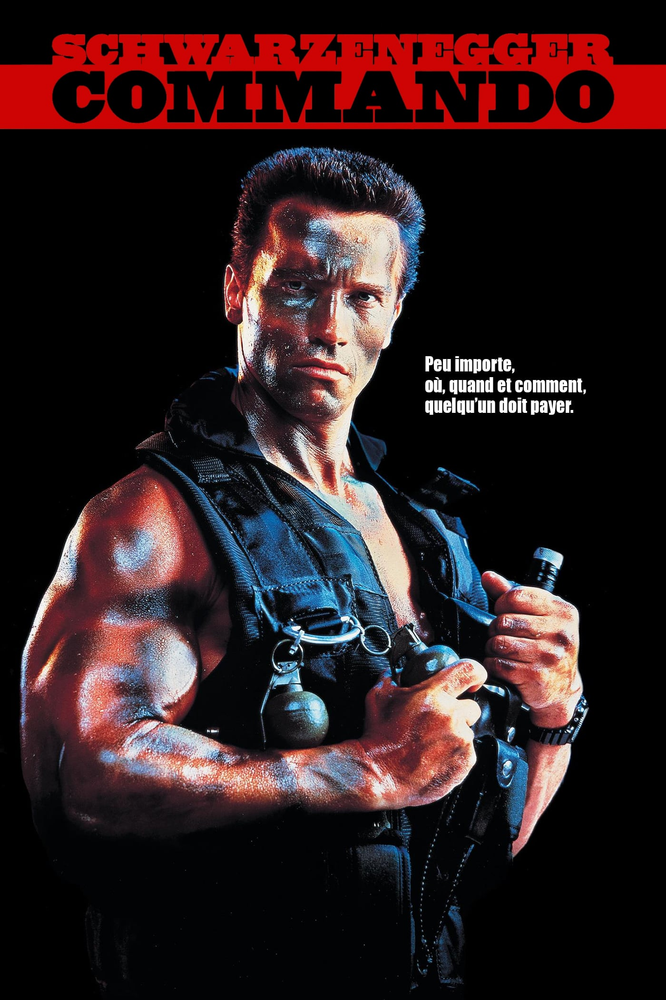

Film
Terminator
 Фильм открывается сценой мрачного будущего, где происходит война людей и машин. Затем действие переносится в настоящее (1984 год). Ночью где-то в Лос-Анджелесе водитель мусоровоза становится свидетелем странных вспышек с электрическими разрядами, из которых появляется обнажённый мужчина — Терминатор. Терминатор встречает троих панков и требует отдать ему одежду. В ответ на угрозы и попытку нападения он убивает панков и забирает одежду одного из них. Спустя непродолжительное время из другой вспышки с разрядами появляется ещё один голый мужчина — Кайл Риз, на которого обращает внимание полиция. Ему удаётся отнять у полицейского пистолет и спрятаться в супермаркете, где он похищает одежду и обувь, чтобы одеться. Выбравшись незамеченным на улицу, Кайл крадет дробовик из полицейского автомобиля, после чего отправляется искать телефонную будку. Из телефонного справочника в будке он узнаёт адрес Сары Коннор.
Фильм открывается сценой мрачного будущего, где происходит война людей и машин. Затем действие переносится в настоящее (1984 год). Ночью где-то в Лос-Анджелесе водитель мусоровоза становится свидетелем странных вспышек с электрическими разрядами, из которых появляется обнажённый мужчина — Терминатор. Терминатор встречает троих панков и требует отдать ему одежду. В ответ на угрозы и попытку нападения он убивает панков и забирает одежду одного из них. Спустя непродолжительное время из другой вспышки с разрядами появляется ещё один голый мужчина — Кайл Риз, на которого обращает внимание полиция. Ему удаётся отнять у полицейского пистолет и спрятаться в супермаркете, где он похищает одежду и обувь, чтобы одеться. Выбравшись незамеченным на улицу, Кайл крадет дробовик из полицейского автомобиля, после чего отправляется искать телефонную будку. Из телефонного справочника в будке он узнаёт адрес Сары Коннор.
Predator
 Некий космический корабль пролетает рядом с Землёй, что-то на неё сбросив.
Некий космический корабль пролетает рядом с Землёй, что-то на неё сбросив.
Группа наёмников во главе с бывшим майором «Датчем» («Голландцем») Шеффером срочно летит в джунгли Центральной Америки спасать некоего весьма важного для интересов США члена тамошнего кабинета министров: прошлым днём вертолёт с ним был потерян на сопредельной территории, предположительно сбившись с курса. Руководящий американской военной миссией генерал тревожится, что пропавшие теперь в заложниках у местных повстанцев. К неудовольствию Шеффера, с группой отправляется курирующий операцию Джордж Диллон, его сослуживец ещё по Вьетнаму, оставивший, однако, удел спецназовца ради карьеры в ЦРУ.
Commando
Главный герой полковник в отставке Джон Мэтрикс проживает в уединённом доме в горах с дочерью-подростком Дженни. К нему прилетает его бывший командир, генерал Франклин Кёрби, и сообщает, что кто-то одного за другим убивает бывших подчинённых Мэтрикса. Генерал предполагает, что скоро убийцы доберутся до самого Мэтрикса, и оставляет двух солдат охранять его дом.
Conan
 «Ко́нан-ва́рвар» (англ. Conan the Barbarian) — американский фильм 1982 года в жанре фэнтези. Сюжет рассказывает о киммерийце Конане, персонаже повестей Роберта И. Говарда, которые издавались в 1930-х годах в pulp-журналах. Действие фильма разворачивается в Хайбории, вымышленной доисторической эпохе. Адаптированный сюжет был написан режиссёром Джоном Милиусом; продюсером фильма является Дино Де Лаурентис, данной работой также занимались его дочь Рафаэлла Де Лаурентис и Базз Фейтшанс. Композитором выступил Бэзил Поледурис. Главные роли сыграли Арнольд Шварценеггер и Джеймс Эрл Джонс. В центре сюжета — история молодого варвара Конана, который пытается отомстить верховному жрецу культа Змеи Тулса Думу за смерть своих родителей.
«Ко́нан-ва́рвар» (англ. Conan the Barbarian) — американский фильм 1982 года в жанре фэнтези. Сюжет рассказывает о киммерийце Конане, персонаже повестей Роберта И. Говарда, которые издавались в 1930-х годах в pulp-журналах. Действие фильма разворачивается в Хайбории, вымышленной доисторической эпохе. Адаптированный сюжет был написан режиссёром Джоном Милиусом; продюсером фильма является Дино Де Лаурентис, данной работой также занимались его дочь Рафаэлла Де Лаурентис и Базз Фейтшанс. Композитором выступил Бэзил Поледурис. Главные роли сыграли Арнольд Шварценеггер и Джеймс Эрл Джонс. В центре сюжета — история молодого варвара Конана, который пытается отомстить верховному жрецу культа Змеи Тулса Думу за смерть своих родителей.
Collateral damage
 Горди Брюэр (Арнольд Шварценеггер) из 28-й пожарной команды готов бороться за жизнь каждой жертвы огня. Став свидетелем взрыва у генерального главного консульства Колумбии, где его дожидались жена с сыном, герой вскоре узнаёт о повстанцах этой страны, в которой идёт Гражданская война, и нежелании правительства США бороться за справедливость. Так, он сам был вынужден добиваться отмщения… Нелегально перейдя границу, герой вскоре теряет рюкзак с документами. Так, оказавшись в числе разыскиваемых, он попадает в тюрьму. Среди напавших на полицейский участок повстанцев Горди узнаёт виновника взрыва у консульства в Америке, отнявшего у него жену и сына. Заполучив электропилу для распиливания замков, Брюэр сбегает. Под видом механика пожарный проникает на территорию партизан, и изготавливает бомбу. Учинив первый разгром, и попав в лагерь к нужным людям, он вновь «сооружает» взрывное устройство… Однако, встретив недавних знакомых, герой пытается предупредить их — Селину Перрини и её сына Мауро — об опасности. В итоге Горди спугивает преступника и оказывается схваченным.
Горди Брюэр (Арнольд Шварценеггер) из 28-й пожарной команды готов бороться за жизнь каждой жертвы огня. Став свидетелем взрыва у генерального главного консульства Колумбии, где его дожидались жена с сыном, герой вскоре узнаёт о повстанцах этой страны, в которой идёт Гражданская война, и нежелании правительства США бороться за справедливость. Так, он сам был вынужден добиваться отмщения… Нелегально перейдя границу, герой вскоре теряет рюкзак с документами. Так, оказавшись в числе разыскиваемых, он попадает в тюрьму. Среди напавших на полицейский участок повстанцев Горди узнаёт виновника взрыва у консульства в Америке, отнявшего у него жену и сына. Заполучив электропилу для распиливания замков, Брюэр сбегает. Под видом механика пожарный проникает на территорию партизан, и изготавливает бомбу. Учинив первый разгром, и попав в лагерь к нужным людям, он вновь «сооружает» взрывное устройство… Однако, встретив недавних знакомых, герой пытается предупредить их — Селину Перрини и её сына Мауро — об опасности. В итоге Горди спугивает преступника и оказывается схваченным.